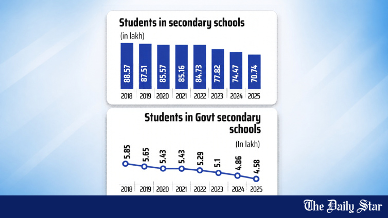
Schools up, pupils down
Bangladesh has more secondary schools than it did seven years ago, but far fewer students in them.
Search the full archive by keyword, format, beat, year and byline status.

Bangladesh has more secondary schools than it did seven years ago, but far fewer students in them.
A Tongi father says he has received death threats after reporting his seven-year-old daughter's alleged abuse at a madrasa. The police response could matter far beyond this one case
A police outpost stood barely 30 yards from a house in Purbachal where “drug parties” had apparently been held for nearly a year.
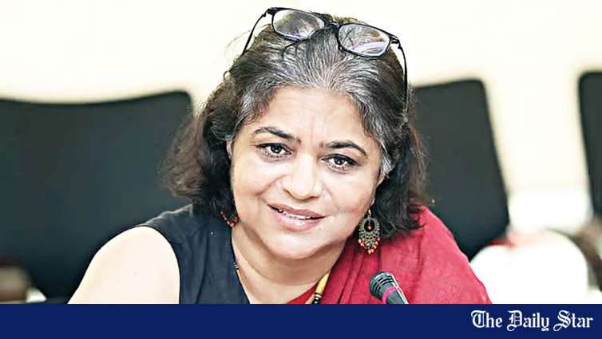
The jailing of 85 people following a raid on a senior police officer’s house in Purbachal last week has raised questions over the evidence behind their convictions and the circulation of their photographs and videos.
According to proposals by the Directorate of Secondary and Higher Education (DSHE), the projects will cover half of the 20,767 secondary and higher secondary educational institutions and be implemented between January 2027 and December 2031.

A journalist and a shopkeeper reported threats before they were killed. Their cases demand answers from the police.
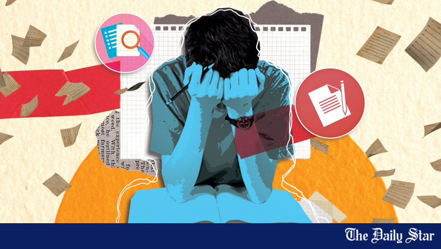
Last week, Education Minister ANM Ehsanul Hoque Milon announced that SSC examinees who failed two subjects could retake those exams within 15 days of the results.
Sharadiya Durga Puja is here again. Across Dhaka, temples and puja mandaps are dressed in festive colours, ready to welcome devotees. Families gather, friends reunite, and children accompany their parents to see the goddess. Devotees bow before the idols, offer anjali and receive prasad.
The confrontation raises deeper questions about university appointments, political influence and accountability
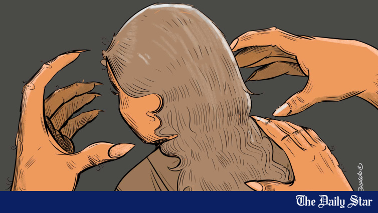
From harassment and threats to retaliation against families who speak up, the burden of safety continues to fall on girls while perpetrators often face little immediate consequence
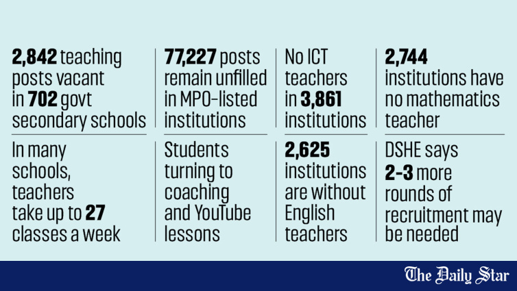
Persistent shortages of teachers have been disrupting classroom learning at secondary schools across the country, forcing many institutions to overburden teachers of key subjects including mathematics, English and ICT, and reduce the frequency of practical classes.
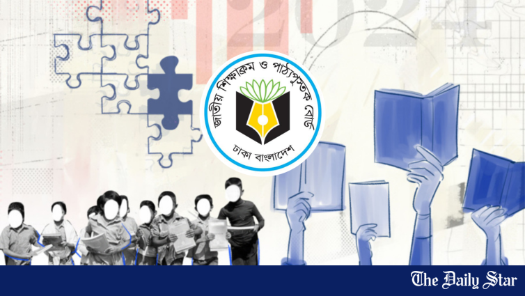
School textbooks will be revised for the 2027 academic year, with new content on the Liberation War, post-independence political history and the July Uprising.
Rajshahi University authorities have repeatedly failed to protect students and journalists from violence on campus since August 2024, even with proctorial officials or teachers present.
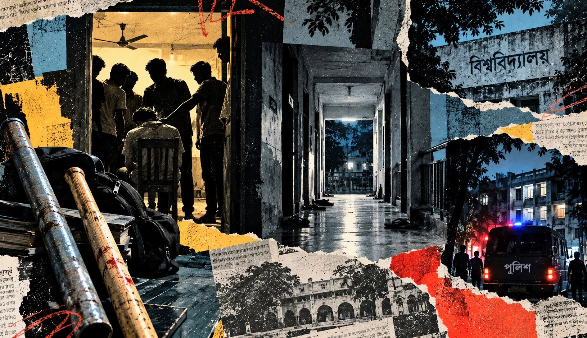
Seven years after Abrar Fahad’s killing, I revisit what I wrote that day about campus violence, political labels and the silence that allowed it to continue.
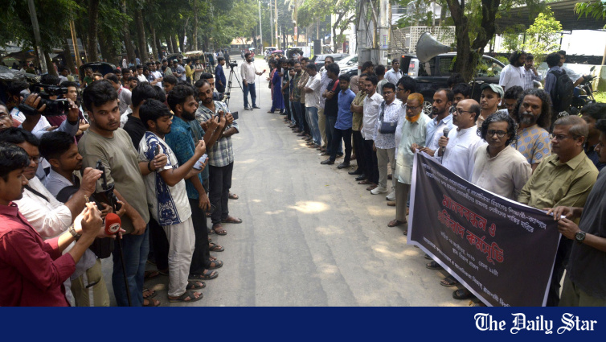
During the Awami League’s three consecutive terms in office over a decade and a half, the then-opposition BNP demanded the right to speak, organise and criticise without being branded an enemy of the state.
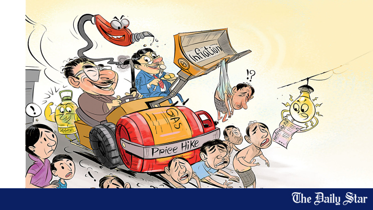
A series of price hikes leaves many families with no wiggle room
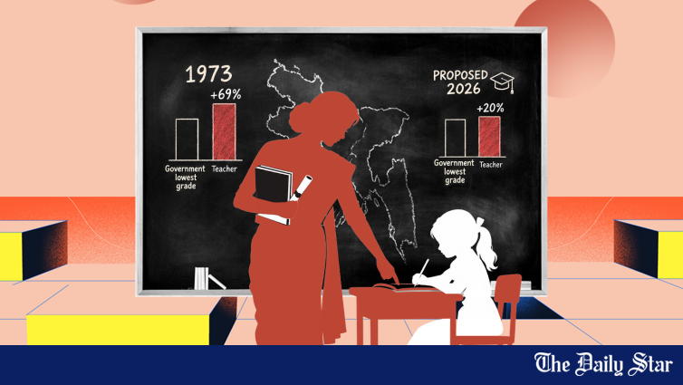
Despite higher entry qualifications, their starting basic is now only 20% above the government’s lowest grade, compared with 69% in 1973
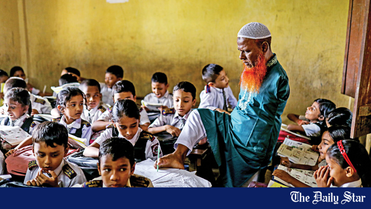
Despite their pivotal role in shaping future generations, government primary schoolteachers remain among the lowest-paid staffers, a disparity that many educators say is reflected in the level of respect they receive.
If Eid is already built into the newsroom calendar, why should colleagues celebrating Puja and other major festivals have to spend their earned leave?
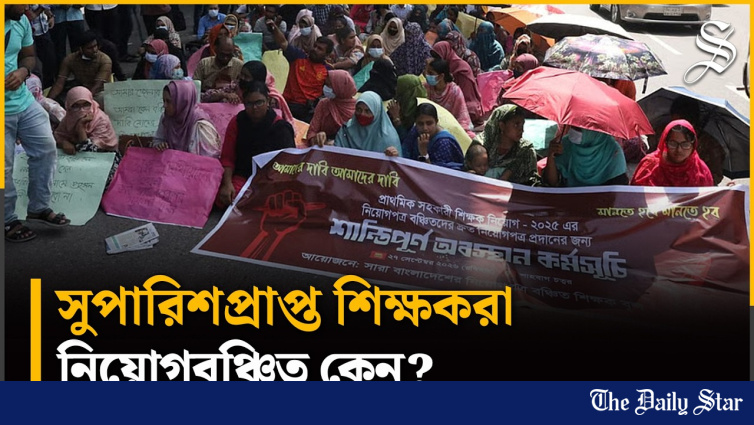
Selected applicants have been waging protests since April for quick completion of the appointment process.
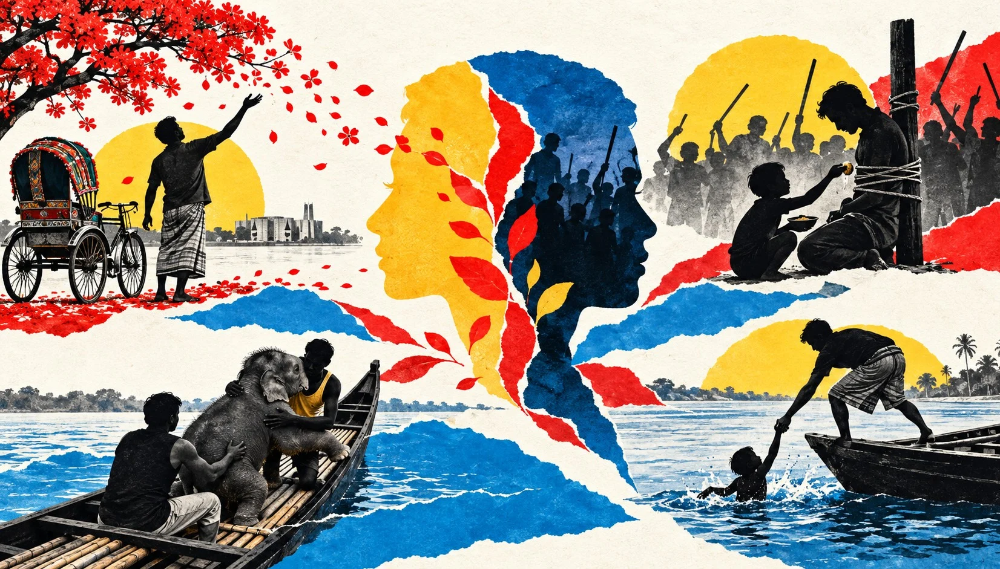
We can stop for a bird, hold an umbrella over a stranger and enter a river to save a life. We can also humiliate, hurt and kill. The distance between those two versions of us is sometimes painfully small.
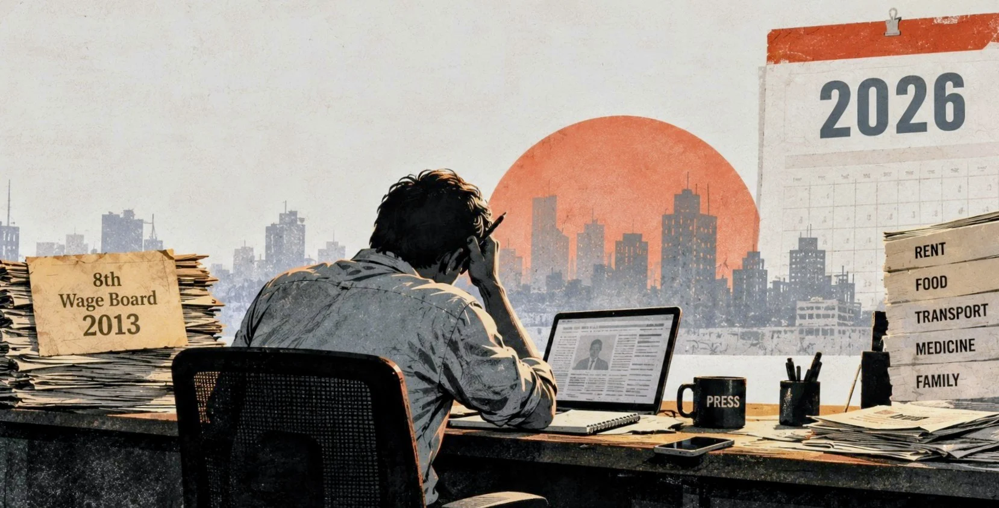
For many journalists, the last wage structure that reached their newsroom dates to 2013. With the Ninth still largely unimplemented, the harder question is whether any new award would actually be enforced.
State minister says government should be judged by groundwork for long-term improvements in education
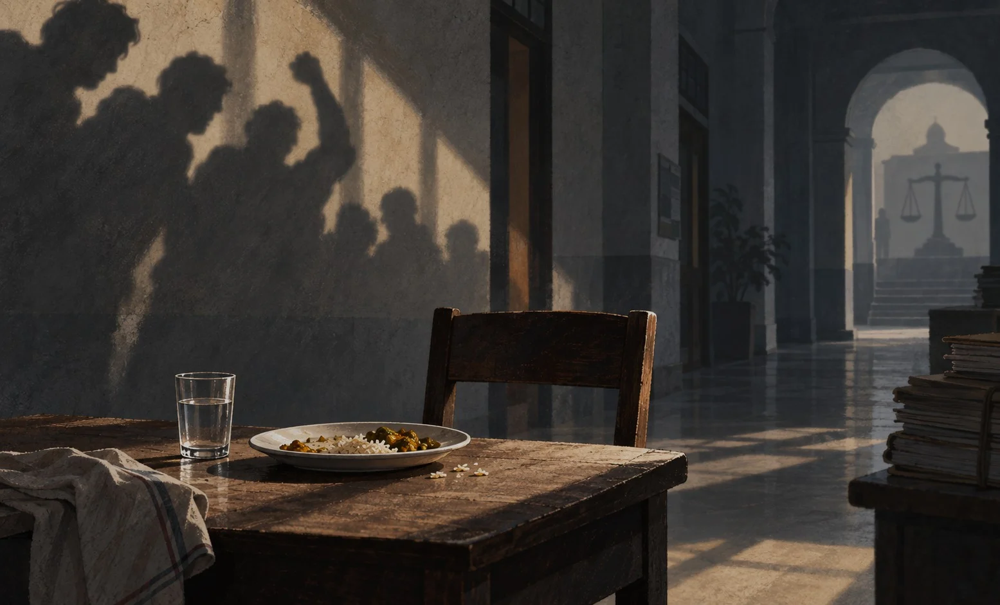
For a few minutes, Tofazzel was sitting in a canteen eating rice like anyone else. Someone had to serve him the food. Someone watched him eat. Someone spoke to him. Then he was taken back and beaten again. How does a person do both?